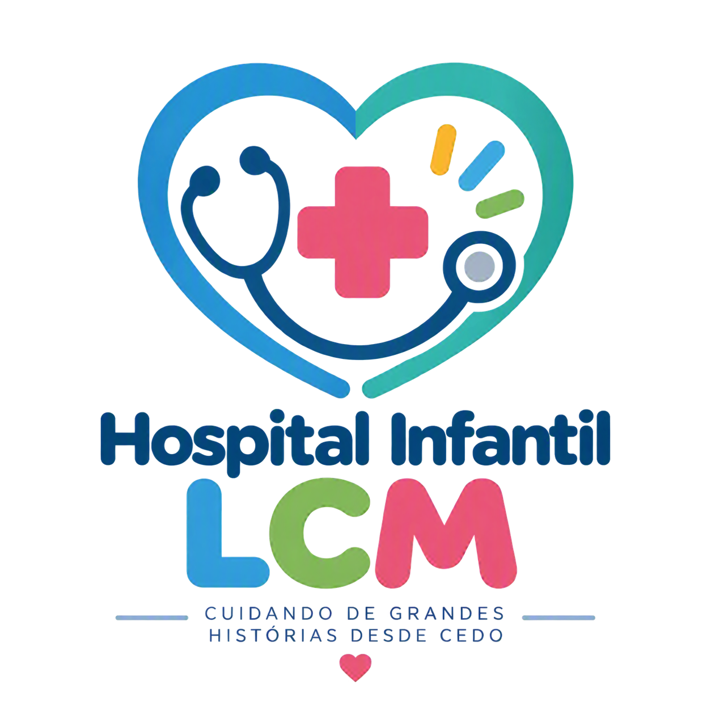
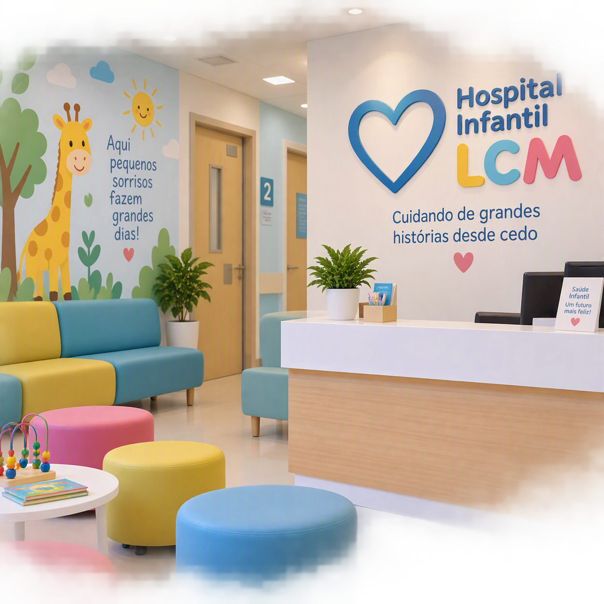

Escolha uma especialidade
Clique em um dos botões para ver mais informações.

Lugar de acolhimento e responsabilidade
O Hospital Infantil LCM é uma instituição dedicada ao atendimento especializado de crianças, oferecendo saúde, acolhimento e cuidado humanizado. Nosso compromisso é proporcionar um ambiente seguro e confortável para pacientes e familiares.
Veja nossas especialidades
Clique em um dos botões para ver mais informações.
A terapia infantil auxilia no desenvolvimento emocional,social e comportamental das crianças.
Acompanhamento completo da saúde infantil desde o nascimento até a adolescência.
Suporte emocional para crianças e familiares.
Orientação alimentar para crescimento saudável.
Proteção e prevenção com vacinas atualizadas.
O Hospital Infantil LCM nasceu com a missão de oferecer atendimento pediátrico de excelência, unindo profissionais qualificados, tecnologia moderna e um atendimento humanizado. Nossa equipe trabalha diariamente para garantir o bem-estar, a segurança e a recuperação das crianças, sempre colocando o paciente em primeiro lugar.
Promover a saúde infantil com qualidade, segurança e respeito.
Ser referência em atendimento pediátrico na região.
Acompanhamento completo da saúde infantil.
Proteção e prevenção com vacinas atualizadas.
Atendimento rápido e especializado para situações urgentes.
Diagnósticos precisos com equipamentos modernos.
Orientação alimentar para crescimento saudável.
Suporte emocional para crianças e familiares.
Atendimento Humanizado
Equipe Especializada
Tecnologia Moderna
Ambiente Seguro
Emergência
Foco no Bem-Estar Infantil
"Excelente atendimento e profissionais muito atenciosos."

"Ambiente acolhedor e organizado."
"Minha criança foi muito bem cuidada durante todo o atendimento."